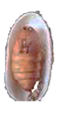
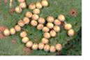
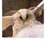
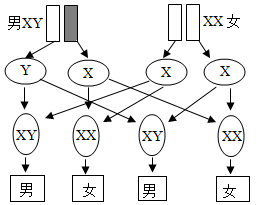

2017年北京市海淀区中考生物试题 · 选择题 第26、27、28、29、30题 · 对应解析
26. “春蚕到死丝方尽，蜡炬成灰泪始干”．家蚕的发育过程中，能吐丝的时期是（ ）
A.

B. C.
D.
【答案】B
【解析】
【分析】家蚕属于昆虫，昆虫的发育过程分为完全变态发育和不完全变态发育，完全变态发育过程经过卵、幼虫、蛹和成虫4个时期，不完全变态发育经过卵、若虫、成虫三个时期。图中A是蛹，B是幼虫，C是受精卵，D是成虫。
【详解】家蚕的发育经过卵、幼虫、蛹和成虫4个时期，且幼虫与成虫在形态构造和生活习性上明显不同，差异很大，这样的发育过程叫完全变态发育。“春蚕吐丝”主要是幼虫发育后期吐丝作茧，化为不食不动的蛹，蛹过一段时间羽化为成虫。家蚕的发育过程中，能吐丝的时期是幼虫。
【点睛】熟知昆虫的发育特点是解题的关键。
27. 一对夫妇已生育了一个男孩，若再生一个孩子，是女孩的可能性是（ ）
A. 50%B. 100%
C. 75%D. 25%
【答案】A
【解析】
【分析】人体细胞内有23对染色体，有一对染色体与人的性别有关，叫做性染色体；男性的性染色体是XY，女性的性染色体是XX。
【详解】在亲代的生殖细胞形成过程中，经过减数分裂，两条性染色体彼此分离，男性产生两种类型的精子--含X染色体的精子和含Y染色体的精子。女性则只产一种含X染色体的卵细胞。受精时，如果是含X的精子与卵子结合，就产生具有XX的受精卵并发育成女性；如果是含Y的精子与卵子结合，就产生具有XY的受精卵并发育成为男性。这说明男女的性别在受精卵形成时就已确定。由于男性可产生数量相等的X精子与Y精子，加之它们与卵子结合的机会相等，所以每次生男生女的概率是相等的，在整个人群中男女性别之比大致1：1。人的性别遗传如图：

从图中也可以看出每次生男生女的概率是相等的。因此一对夫妇已生育了一个男孩，再生一个女孩的可能性是50%。
【点睛】解答此类题目的关键是理解人类的性别遗传过程。
28. 下列疾病中，属于传染病的是（ ）
A. 恶性肿瘤B. 糖尿病C. 流感D. 白化病
【答案】C
【解析】
【分析】传染病是由病原体引起的，能在生物之间传播的疾病。传染病一般有传染源、传播途径和易感人群这三个基本环节，具有传染性和流行性。
【详解】恶性肿瘤是免疫疾病；糖尿病是激素（胰岛素）缺乏症；流感是由流感病毒引起的传染病，具有传染性和流行性；白化病是遗传病。因此属于传染病的是流感。
【点睛】解答此类题目的关键是理解掌传染病的概念和特点。
29. 在抵御病原体感染时，保卫人体健康的第一道防线是（ ）
A. 免疫器官B. 皮肤和黏膜C. 体液中的杀菌物质D. 淋巴细胞
【答案】B
【解析】
【分析】人体的三道防线是：第一道防线是皮肤、黏膜、纤毛，功能是阻挡、杀菌和清扫异物；第二道防线是体液中的杀菌物质和吞噬细胞，功能是溶解、吞噬病原体；第三道防线是免疫器官和免疫细胞（主要是淋巴细胞）功能是能产生抗体抵抗抗原（侵入人体内的病原体）。
【详解】第一道防线是由皮肤和黏膜构成的，他们不仅能够阻挡病原体侵入人体，而且它们的分泌物（如乳酸、脂肪酸、胃酸和酶等）还有杀菌的作用，呼吸道黏膜上有纤毛，具有清扫异物的作用；因此，保卫人体的第一道防线是皮肤和黏膜。
【点睛】解答此类题目的关键是熟记三道防线的组成、功能。
30. 按照世界卫生组织对健康的定义，健康是指（ ）
A. 有积极向上的心态和良好的人际关系
B. 能加强体育锻炼、搞好个人卫生、具有一个健壮的体魄
C. 身体健康、没有疾病和适应社会能力强
D. 一种身体上、心理上和社会适应方面的良好状态
【答案】D
【解析】
【分析】根据健康的定义分析解答。健康是指一种身体上、心理上和社会适应方面的良好状态，而不仅仅是没有疾病和不虚弱。
【详解】传统 健康观是“无病即健康”，现代人的健康观是整体健康，世界卫生组织认为，健康是指一种身体上、心理上和社会适应方面的良好状态，而不仅仅是没有疾病和不虚弱。近年来，世界卫生组织又把道德修养和生殖质量也纳入了健康的范畴。可见D符合题意。
健康观是“无病即健康”，现代人的健康观是整体健康，世界卫生组织认为，健康是指一种身体上、心理上和社会适应方面的良好状态，而不仅仅是没有疾病和不虚弱。近年来，世界卫生组织又把道德修养和生殖质量也纳入了健康的范畴。可见D符合题意。
【点睛】熟练掌握健康的概念，就能做出正确的答案。
二、选择题